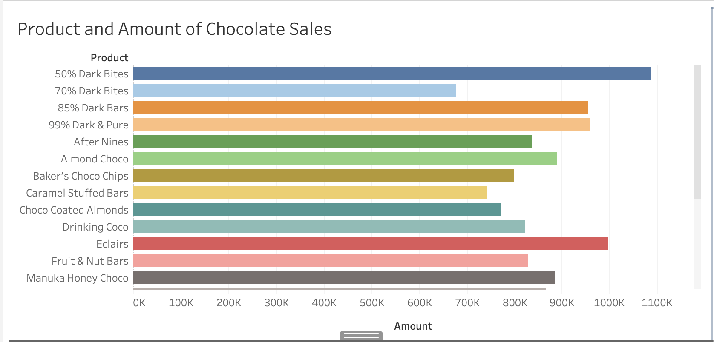
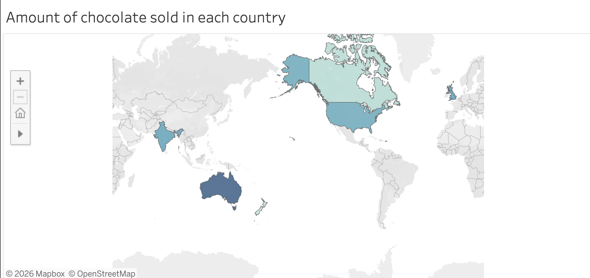

Introduction
I originally started this project in Tableau Public Desktop using a Kaggle dataset, but encountered problems getting the charts to display as I expected. After troubleshooting (including help from ChatGPT) I switched to Tableau Public in the web browser, uploaded a different dataset, and was able to build the visuals successfully.
Process & Design Choices
I created a bar chart and a map to explore chocolate sales. For the bar chart I colored the bars differently to improve readability. The map visualizes sales geographically to highlight regional differences. I felt these two designs complemented each other and represented the data effectively.
Findings and Surprises
Looking at dark chocolate (50%, 70%, 85%, 99%), I expected milder percentages to sell more. The bar chart confirms part of that expectation—50% Dark Bites had the highest sales in that group—but I was surprised that 85% and 99% also showed very strong sales, much higher than I anticipated. This suggests a notable market for very dark chocolate, possibly driven by flavor preference or health perceptions.
Another surprise was that non-dark items like Eclairs and Manuka Honey Choco sold well, acting as outliers against the assumption that milder chocolate dominates sales.
Questions for Further Analysis
- Why are 85% and 99% dark chocolates selling so well? Marketing, promotions, or brand loyalty?
- Are there regional or demographic preferences driving these trends?
- Are seasonal effects or bundles influencing the outliers?
Tools & Limitations
Tableau Public is excellent for quickly producing clean, interactive visuals via drag-and-drop without coding. Charts look professional and are easy to share. However, Tableau can be less flexible than Excel or Python for advanced customization or programmatic analysis. The free Tableau Public service also has limitations around privacy and very large datasets.
Conclusion
Tableau allowed me to explore the chocolate sales dataset and reveal both expected and surprising patterns. Further analysis (filters, segmentation, and promotional metadata) would help explain the unexpected popularity of very dark bars and certain non-dark products.
Visualizations
Below are the data visualizations created for this analysis:
Graph 1: Product and Amount of Chocolate Sales
[Description from your graph - about chocolate sales by product or category]
Graph 2: Amount of Chocolate Sold in each country
[Description from your graph - about chocolate sales by country or region]